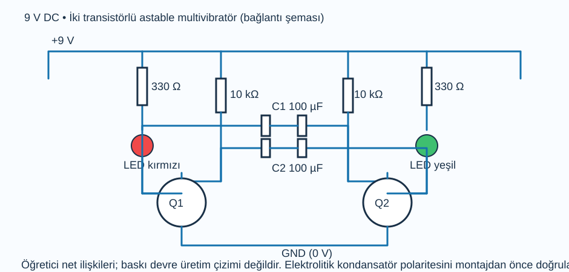

Nasıl çalışır?
İki NPN transistör, çapraz bağlı kondansatörler sayesinde sırayla iletime geçer. Bir LED yanarken diğeri söner. Devre kararlı tek bir durumda kalmaz; bu nedenle teknik adı astable multivibratördür.
Bu çalışma 9 V DC eğitim devresidir. Animasyon, devrenin davranışını kavramsal olarak gösterir; SPICE veya SimulIDE çözümünün yerine geçmez.
Canlı LED animasyonu
Kırmızı LED
Yeşil LED
Q1 / Q2 dönüşümlü anahtarlama — kırmızı LED yanıyor
Devre bağlantı şeması

Bu, açıklamalı bağlantı görselidir; KiCad şeması veya üretim PCB’si değildir.
Kullanılan parçalar
2 × NPN transistör
SimulIDE genel BJT modeli
SimulIDE genel BJT modeli
2 × LED
Kırmızı / yeşil
Kırmızı / yeşil
2 × 330 Ω direnç
2 × 10 kΩ direnç
2 × 100 µF elektrolitik kondansatör
9 V DC kaynak
PCB durumu: Fiziksel transistör modeli ve bacak dizilimi (E/B/C) seçilmeden PCB üretim dosyası yayımlanmamıştır. Elektrolitik kondansatörlerin kutupları ayrıca kontrol edilmelidir.
Orijinal SimulIDE devresi
SimulIDE .sim1 dosyasını indir — tasarımın orijinal kaynak dosyası değiştirilmeden korunmuştur.